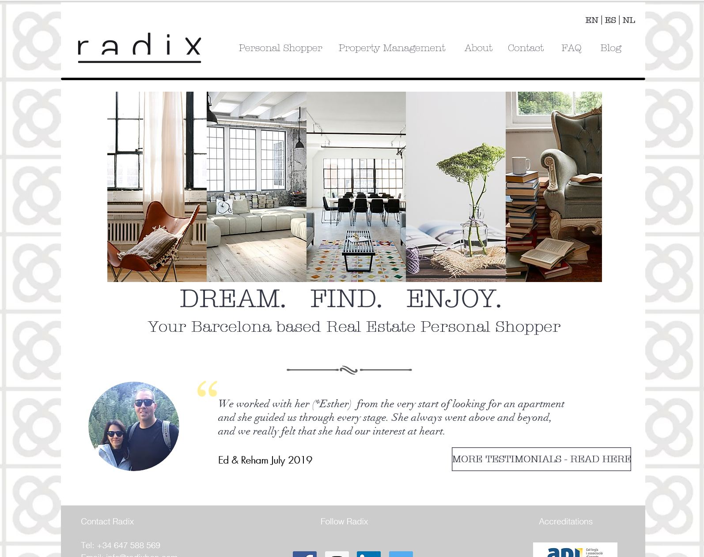

Adding Analytics to Radix BCN
This week's assignment is to add analytics to this journal or another website so that we can study and experiment with how users are interacting with the site. Despite having added Google Analytics to this User Science Journal, the analytics data I have to date is not very interesting. There have not been many visitors to provide data. Because of this, I've chosen to use a different website, www.radixbcn.com for this Google Analytics assessment.
The Radix BCN is a real estate buyer's agency based in Barcelona, Spain. The multilingual website offers content in English, Spanish, and Dutch. It consists of several informational pages and a blog. It began using Google Analytics on March 15th, 2017.
 The English language home page for Radix BCN.Pre-Evaluation
Before looking at the Google Analytics data, let's start with these 4 hypotheses about the website's users and their behavior. I'll test these against the data.
- Demographics: Users are 35 and over and come from many different countries, including Spain, Netherlands, United States, and United Kingdon.
- Acquisitions: Users come to the site by directly entering the URL or through search.
- Devices: 75% of users are on a desktop. 25% are on a mobile device.
- Popular Pages: The most visited page of the site is the Home Page, followed by the Property Search page, and then the Contact page.
Adding Google Analytics
Radix BCN's website is built with Wix. Following Wix's instructions for integrating with Google Analytics, the Google tracking code was added to the Google Analytics section of Wix's Marketing Integrations in March 2017.
Preliminary Findings
I looked at lifetime data in Google Analytics to create these preliminary findings.
Demographics
Age
Users were younger than I expected. While 61% of users were 35 and over, the largest age group was 25-34 year olds at 32%. The 35-44 year old age group was second with 28% of users.
Country
| Rank | Country | % Users |
|---|---|---|
| 1 | Spain | 33% |
| 2 | Netherlands | 19% |
| 3 | United States | 10% |
| 4 | Germany | 4% |
| 5 | Brazil | 4% |
As expected, users were an international group. There were visitors from 10 different countries. The majority of visitors came from 3 different countries.
| Rank | Country | %users |
|---|---|---|
| 1 | en-us | 26% |
| 2 | es-es | 16% |
| 3 | nl-nl | 17% |
| 4 | en-gb | 9% |
| 5 | nl | 5% |
When language data is combined with country data, it suggests that many users are expats or global travellers. While only 13% of users were located in English speaking countries, 35% of all users had English as their language.
Acquisitions
Pie chart of top channels shows that Direct(22.3%), Paid Search(21.6%), Referrals(18.7%), Organic Search(17.9%), Display(10%), and Social(7.2%) were the top channelsDirect URL entry was the top channel follow closely by Paid Search. This is likely due to a 2018 paid search campaign. Referrals were next due to peaks in February 2018, August 2018, and December 2019. The number of visitors from organic search has been fairly steady with a small amount of growth year over year.
The vast majority of referrals came from suspicious sources with "auto seo" or "auto traffic" in their name. I'm ignoring those for this assessment as I don't believe they reflect actual user behavior.
Valid referrals came from:
- The Radix BCN link on the Asociación Española de Personal Shopper Inmobiliario website
- Idealista, a real estate search engine, where Radix has listed properties for rent
- Dutch magazine article on Radix
Devices
It was much closer to a 50-50 split between desktop and mobile users, with a slight edge to desktop. Given global trends in internet usage, I expect that mobile users will surpass desktop users of Radix BCN eventually.
Popular Pages
| Rank | Page | % Users |
|---|---|---|
| 1 | Home - English | 27% |
| 2 | Property Search | 14% |
| 3 | Home - Dutch | 10% |
| 4 | Property Management | 8% |
| 5 | About | 5% |
| 6 | Contact | 4% |
| 7 | Home - Spanish | 3% |
The home pages are the most popular page in each language. The English language pages are visited far more than the other languages. From a business perspective, Radix BCN would like to see more traffic on the contact page and less on the property management page. Radix BCN is transitioning out of the property management business and is in the process of removing that page from the site.